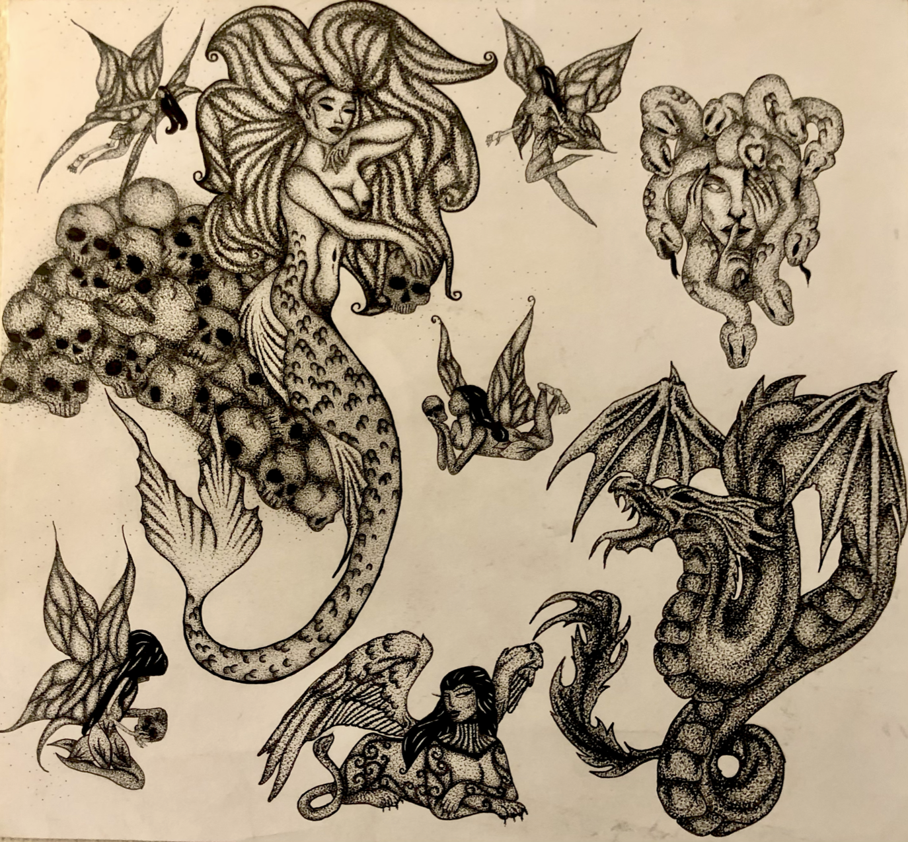
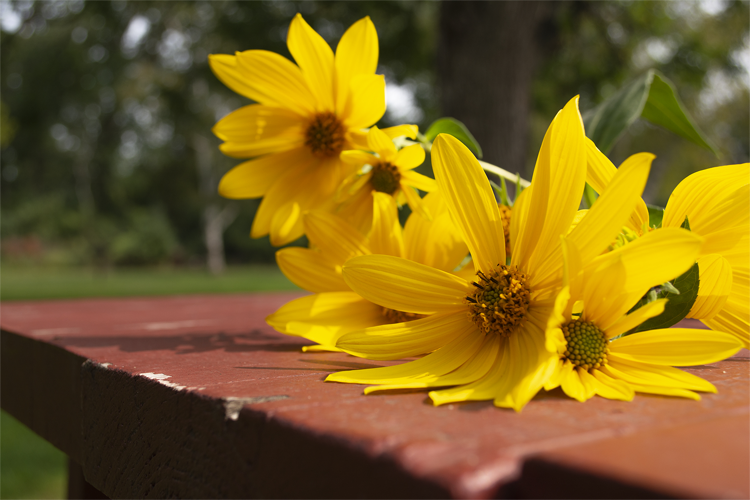
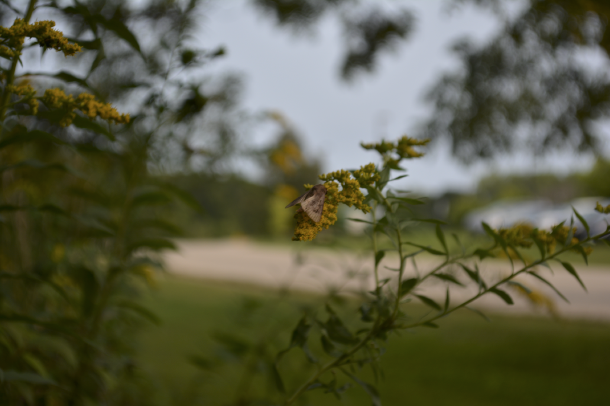

My drawings are all mainly tattooed based as I draw out all my own tattoos; they are a nice refined version of my style. There is a lot of work within how I draw the piece it is much more simple with how many elements I involve but still overly detailed as well. I like involving a lot within my pieces as much thoughts that go through my head; I try to rely on that on my canvas as chaotically or maybe not so much as I can. Photography is a type of artwork that I like to play around with. Photography is interesting because you can only control so much of what the photo looks like. The environment is really what you are capturing any photo, taking in it’s movements, small details, and all while capturing the whole bigger picture. So much can happen in one single snapshot of a photo.
This flash tattoo drawing is a drawing composed of multiple drawings of mythological creatures that I eventually want to get tattooed on me. I researched all the creatures and got the mythology of all of them. The creatures that I choose typically have a negative connotation about them but also have super good traits that get overlooked by the one negative notation of them. I feel a lot in the same way towards my own past experiences, even though it may have been bad there are things to take away from it. Dragons are known for being destructive but also loyal and caring creatures. Mermaids or some referred to them as Sirens got a bad name in an old Greek poem saying they kill all men in the sea. The other side of that story is that the mermaids would also aid and help sunken ships. There are always two sides to every story and just getting a first glance does not tell you anything about that person's character.
This image of these flowers is one of my favorite photos taken. It's so simple, clean, and bright. Most of my artwork has a dark element to it, meaning an element that some may see as a negative or not as “happy”. But in my photography I try to show the simple things in life just existing as they are, no enhancements, no setting up. I just click the camera and see what the image comes out as, I may adjust shutter and other things with the lens but I always aim for the simplest and clearest photo of an object to show its beauty in simplicity.
Another photo I have taken is one of a little moth on this little flower. I'll never forget it was a windy, gray day out and I decided to grab my camera and take a walk. I was walking around the wooded area on my college campus and saw this little guy on this little flower holding on for life to not get blown off his little spot. I thought it was so cute I stopped and captured it in one single shot. I did not and do not have another photo. I got it in one and that's all I needed.